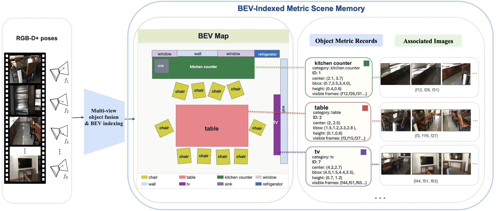

BEV3SR：把视频观测组织成可查询的度量 BEV 场景记忆做三维空间推理
BEV3SR: Evidence-Aware 3D Spatial Reasoning from Video
技术链条是：Mask2Former 全景分割 → 逐像素反投影到世界系并投到地面栅格得到 BEV 足迹 → 用实例图关联跨帧同一物体、合并成持久物体记录（含高度范围与支撑帧集合）→ BEV 栅格索引支持按位置查物体 → 形式化器判定问题属于度量还是视觉证据 → 度量路径做参考系实例化（含 agent 视角的朝向假设枚举）与算子执行，视觉路径做物体一致 + 场景上下文的贪心选帧。Qwen3-VL-8B 上 SQA3D EM 51.6→62.6、ScanQA EM 27.8→30.6、VSI-Bench 静态子集 53.8→63.8；把深度/位姿换成 MapAnything 估计（AbsRel 20.6%、ATE 0.34 m）仍有 56.5/29.0。
SQA3D EM
VSI-Bench static average
geometric reasoner gain
RGB-only variant
作者、单位与技术谱系 · Research context
作者与单位
研究脉络
- GPT4Scene（CVPR/arXiv 2025）技术前作关系：GPT4Scene 把 BEV 对齐的物体标记作为视觉提示喂给模型；BEV3SR 把同一 BEV 结构改造成可查询的度量记忆，让几何计算发生在模型之外。[论文表 2 与 4.2.2 节]
- Video-3D LLM / LLaVA-3D同期对照关系：这两条路线把三维位置信息编码进 token 或构造 3D-aware token；本篇不改进模型内部表征，而是外置显式记忆，属于互补路线。[论文相关工作与表 2]
- MapAnything（用于 RGB-only 几何）技术依赖关系：RGB-only 鲁棒性实验直接用 MapAnything 从 RGB 联合估计深度、内参与位姿，其余管线不变。[论文 4.4 节]
合作网络
- Fan Zhu — Rui Yu 共同署名Fan Zhu → Rui Yu关系：共同署名[arXiv HTML 作者行]
- University of Louisville 单一机构署名Fan Zhu / Rui Yu → University of Louisville关系：共同署名[arXiv HTML 机构行]
- BEV3SR → MapAnythingBEV3SR（RGB-only 变体） → MapAnything关系：技术依赖[论文 4.4 节]
本篇为单一机构两位作者，未发现公开合作边之外的其他网络关系；与 GPT4Scene、Video-3D LLM 的关系来自正文对比语境，属有来源的解读。
方法本质拆解 · What actually changed
完全免训练
框架不更新任何权重：分割用 Mask2Former，视觉问答用现成的 Qwen3-VL-8B 等骨干，几何算子与选帧规则都是确定性的。RGB-only 实验里深度、内参、位姿由 MapAnything 现成模型估计，也没有在本数据集上微调。所有增益来自表征组织与路由，而非训练。
约束是度量坐标与参考系
所有物体记录都必须落在同一世界坐标系的地面栅格上，并用高度范围表达竖直支撑；问题被强制指定四种参考系之一（agent/view/object/scene），agent 系还要给出站位锚点与朝向假设。这些约束作用在查询与记录两端，使“左/右/前/后”不再依赖图像左右，而是依赖显式坐标轴。
推理是路由 + 算子/选帧
推理时先把问题形式化成参考系、目标与证据类型，metric 路径实例化参考系后在物体记录上执行计数、距离、尺寸、方向等算子；visual 路径按物体覆盖与场景上下文增益贪心选 16 帧以内的图像交给 VLM。没有全局 BA、没有测试时优化，也没有对 VLM 的额外训练，因此同一输入可复现。
把度量记忆放在模型外面
机制是：多帧观测先被压成物体级度量记录，几何问题在记录上确定性求解，语义问题再回取支撑帧，于是模型只负责它擅长的外观判断，度量关系不经过token压缩。它没有做的是动态物体跟踪、跨会话地图合并与分割质量的在线修正。
输入 = RGB-D 视频 + 内参 + 位姿；改变的位置 = 把观测压成 BEV 索引的物体级度量记录并把问题路由成度量/视觉两类；约束/动作 = 世界系地面栅格 + 显式参考系 + 确定性算子 / 贪心选帧；直接效果 = SQA3D 62.6 EM、VSI-Bench 63.8，RGB-only 仍有 56.5。

桥接价值Bridge
桥接价值
它把“三维表征”与“语言推理”之间的接口写清楚了：BEV 不是一张俯视渲染图，而是“格子 → 持久物体 id → 支撑 RGB 帧”的索引结构，既能被几何算子查询，也能回取原始视角给视觉语言模型做语义判断。这对我们做地图侧可靠性很关键：哪些结论是度量算出来的、哪些是视觉模型判断的，可以在同一条记录上区分。免训练也意味着可以直接插到现有 SLAM/重建管线后面做诊断工具，而不必重训模型。
方法与模块Method
方法摘要
场景记忆构建：对选定帧做全景分割，逐像素用深度反投影到世界系，再投到地面栅格得到物体足迹、地面包围盒、质心与竖直高度范围；跨帧用实例图把语义兼容且 BEV 位置/足迹/高度接近的实例连边，连通分量合并成持久物体记录，并保留成员帧—分割 id 以支持后续取图。任务形式化：把问题拆成参考系类型（agent/view/object/scene）、目标（任务类型 + 目标描述 + 关系约束）与证据类型（metric/visual）。推理：metric 路径实例化参考系后执行计数/距离/尺寸/方向/支撑等算子；visual 路径按物体覆盖与场景上下文两项增益贪心选帧，交给骨干 VLM 回答。
可迁移模块
第一是“物体记录 + 支撑帧集合”的数据结构，它让每条几何结论都能回溯到具体图像证据，适合我们做可审计地图。第二是 agent 参考系的朝向枚举：不回归连续朝向，而是在由墙面法向初始化的有限假设集里选满足方向线索最多的组合，这种离散化思路在退化或弱纹理场景比直接回归稳。第三是证据类型分流：先判断问题能不能纯几何解，不能才走视觉模型，这条路由规则可以直接用于我们的多传感器问答/诊断接口，避免让大模型做它不擅长的度量计算。

证据Evidence
关键证据与数字
跨骨干一致性：SQA3D test 上 EM 分别提升 +11.0（Qwen3-VL-8B 51.6→62.6）、+8.3（InternVL3.5-8B 52.9→61.2）、+11.1（LLaVA-OneVision-1.5-8B 49.2→60.3），EM-R 同步提升；ScanQA val 上 EM 27.8→30.6、CIDEr 82.6→95.6；VSI-Bench 静态子集 Avg-6 53.8→63.8（+10.0），其中相对方向 47.6→83.5。消融：几何可解子集上 GR 把 EM 43.2→65.5（+22.3），而仅注入 BEV 物体标签为 41.7（−1.5）；全验证集 GR 单独 51.0→59.4、VEA 单独 52.9、两者合用 61.3。RGB-only 版本在深度 AbsRel 20.6%、焦距误差 4.7%、位姿 ATE 0.34 m 时仍得 56.5（SQA3D）与 29.0（ScanQA）。
边界与下一步Limits & Next Step
边界与风险
它假设输入带相机内参与位姿，并依赖 Mask2Former 的全景分割质量；分割漏检或类别错误会直接变成“物体不存在”，几何算子再准也救不回来。跨帧关联用的是 BEV 质心、足迹与高度范围的启发式连边，物体移动、遮挡后重现或相邻同类物紧贴时可能错误合并或分裂，论文没有给动态场景的定量评测。agent 参考系要靠文本线索（“我靠在厨房台面”“自行车在我左边”）反推站位与朝向，线索缺失或歧义时只能退化为假设搜索的次优解，论文报告形式化器参考系字段准确率 95.8%，但那是分类准确率而非最终答案正确率。
下一步实验
可以在我们已有的室内/车载序列上做一个最小复现：用现成 SLAM 位姿 + 全景分割构建 BEV 物体记录，先只做计数与相对方向两类算子，测“有记忆”和“纯 16 帧提示”的差距，再逐步加入遮挡与动态物体。第二步专门压测跨帧关联：人为让物体移动或短暂消失，统计合并错误率与由此导致的答案错误率，这比总体 EM 更能说明记忆结构的可靠性。第三步把证据类型分流接上一个轻量分类器替代规则判定，观察误路由（把度量问题送进视觉模型）对最终精度的影响。